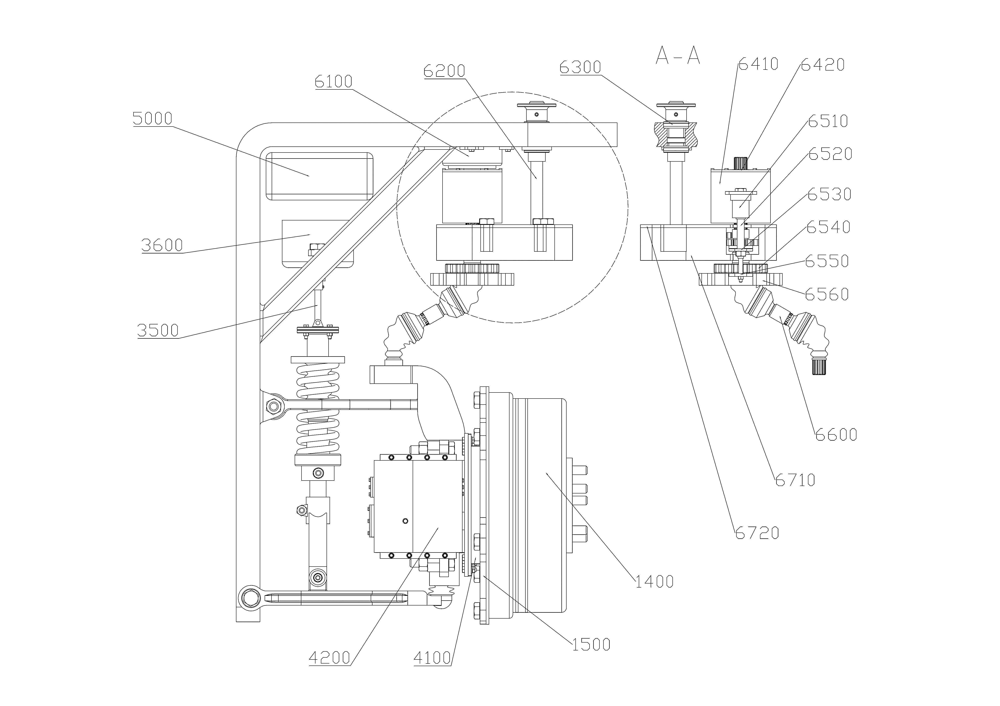

Generalized Fault-Tolerant Control for Multi-Wheel Corner-Module Vehicles via Reconfigurable MPC
Bailin Liang, Junnian Wang*, Zidong Zhou, Guoshun Cai, and Yong Wang*
ISA Transactions（JCR Q1；IF=6.6），审稿中。
我目前在吉林大学汽车工程学院攻读车辆工程硕士学位，导师为王军年教授，预计于 2027 年 6 月毕业；本科同样就读于吉林大学。我的研究聚焦车辆运动控制、角模块车辆、非线性动力学，以及基于模型与学习的控制方法。
车辆工程硕士，汽车工程学院
导师：王军年教授
2024 年 9 月 - 2027 年 6 月（预计）
核心课程：现代控制理论基础、现代数值计算分析与方法、应用数理统计、新能源汽车设计与控制。
GPA：88.21/100。免试推荐攻读硕士研究生。曾获潍柴社会奖学金（前 1%）。
车辆工程本科，汽车工程学院
2020 年 9 月 - 2024 年 6 月
核心课程：汽车构造（双语）、汽车理论、汽车设计、控制工程基础、理论力学、微积分、线性代数、概率论与数理统计。
GPA：87.89/100。
Bailin Liang, Junnian Wang*, Zidong Zhou, Guoshun Cai, and Yong Wang*
ISA Transactions（JCR Q1；IF=6.6），审稿中。

Bailin Liang, Junnian Wang*, Yitong Wang, Chunlin Zhang, Yinpu Qi, and Heping Ling
Nonlinear Dynamics（JCR Q1；IF=5.7），审稿中。
Junnian Wang, Yitong Wang, Chunlin Zhang, Zhiqin Li, Liyuan Liu, Wentao Hu, Bailin Liang, and Yinpu Qi
Green Energy and Intelligent Transportation（JCR Q1；IF=21.5），审稿中。
作为第一学生发明人，我已有10 项授权或公开发明专利，其中包括1 项已授权美国专利， 并累计参与21 项授权或公开发明专利。
第一学生发明人
美国专利：US20260200519A1，授权：2026 年 7 月。
中国发明专利：CN120246072A，授权：2025 年 8 月。
第一学生发明人
中国发明专利：CN121492543A，公开：2026 年 2 月。
第一学生发明人
中国发明专利：CN120287823A，授权：2025 年 10 月。
第一学生发明人
中国发明专利：CN120287825A，公开：2025 年 7 月。
第一学生发明人
中国发明专利：CN120481601A，公开：2025 年 8 月。
第一学生发明人
中国发明专利：CN120287824A，公开：2025 年 7 月。
第一学生发明人
中国发明专利：CN121492543A，公开：2025 年 7 月。
第一学生发明人
中国发明专利：CN120288017A，公开：2025 年 7 月。
第一学生发明人
中国发明专利：CN120287823A，公开：2025 年 7 月。
2026 年 9 月 - 至今
广义摆振动力学建模：建立面向多轮角模块车辆的广义非线性摆振模型，描述车轮摆振、悬架侧倾与车轮转动振荡之间的惯性耦合，并考虑轮胎侧向松弛、转向间隙和干摩擦。模块化架构可快速适配不同的多轮角模块底盘构型。
非线性摆振动力学分析：研究转向间隙、干摩擦以及多个子系统间的动力学耦合如何重塑稳定性边界，并导致周期、准周期、慢幅值调制、多稳态和非零均值振荡等复杂摆振响应。
摆振感知神经残差 DiffTune-MPC：构建以物理引导标称模型为基础、通过神经残差补偿未建模非线性动力学的混合预测模型，以降低预测失配。摆振感知 DiffTune-MPC 根据闭环外层目标调整内层 MPC 代价权重，最小化带限摆振能量并促进振荡包络收缩，实现驱动-制动-转向协同摆振抑制。


国家重点研发计划 · 主要参与人，项目编号 2024YFB2505100 · 长春


2025 年 11 月 - 2026 年 7 月
本文提出一种面向多轮角模块车辆的通用容错控制（GFT-RMPC）框架，可适配任意底盘构型（4W/6W 及更多构型），具备跨平台泛化能力。该框架包含底盘特征的自动拓扑辨识、考虑执行器健康状态的可重构MPC方案，以及物理潜空间优化方法，确保车辆能在多执行器失效的复杂场景下仍保持车辆稳定性与轨迹跟踪精度。在 18 种转向、驱动及复合故障场景下验证了 GFT-RMPC，证明其在四轮与六轮构型下相较基线方法具有更优的稳定性与跟踪性能。硬件在环测试验证了 12.36 ms 内的实时执行能力，体现了跨构型适应性与工程可部署性。



探索依赖观测历史的潜在状态表示，从多模态观测历史中选择性保留与任务和控制相关的信息，抑制干扰变化、感知噪声及无关历史信息。研究具有内置闭环保证的潜在状态到策略的参数化方法，使可容许潜在状态生成的高层动作策略与稳定化底层控制器及物理系统结合时保持可行与安全。进一步探索潜在空间在线规划与基于强化学习的策略优化，在认证的可容许集合内更新潜在状态与策略，提升任务性能并保持闭环保证。
自动驾驶研发实习生 · 广州

悬架组成员 · 长春